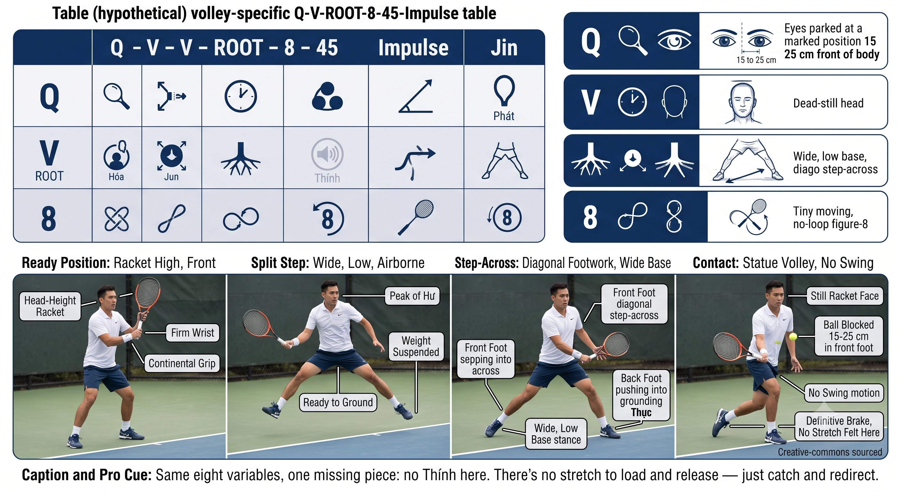

Chương 24: Vô-Lê Và Overhead
(Bản dịch tiếng Việt của Chapter 24 trong Sổ Tay Quần Vợt Thống Nhất)
VÔ-LÊ & OVERHEAD
Trò Chơi Gọn Gàng (The Compact Game)
Không có thời gian cho các vòng lặp. Mượn tốc độ. Chặn. Chuyển hướng. Kết thúc điểm.
Vô-Lê Không Phải Là Một Cú Vung
Vô-lê là một cú chặn. Bạn không đánh trái bóng — bạn gặp nó với một mặt vợt vững và để bóng nảy lại.

Hình 24.1
— Henry Phạm
Vô-lê hoàn toàn không có cú chuẩn bị. Cây vợt đã sẵn sàng. Tốc độ của đối thủ cung cấp năng lượng.
Danh Sách Kiểm Tra Vô-Lê
Nếu bạn vung tại một cú vô-lê, bạn đã muộn. Cây vợt phải đang chờ.
— Henry Phạm
– Cách cầm: Continental. Cổ tay vững, hằng định ở mức 4 trên 10. Mặt vợt đặt sớm.

Hình 24.2
– Tư thế sẵn sàng: vợt lên, ngang đầu, phía trước. Split step hạ cánh rộng và thấp.
– Tiếp xúc: ra phía trước, 15 đến 25 cm trước chân trước. Không bao giờ tại người.
– Mặt vợt: hơi mở cho vô-lê thấp, trung tính cho vô-lê cao. Không bao giờ khép.
– Chuyển động: không vung. Chặn, hấp thu, một cú đẩy 1-inch. Cảm nhận bóng nén trên dây.
– Chân: bước chéo theo đường chéo, không phải tiến. Tư thế rộng. Chân sau đẩy.
– Mắt: đỗ tại vùng tiếp xúc khi đối thủ tiếp xúc. Giữ qua suốt cú đánh.

Hình 24.3
– Kết thúc: mặt vợt vẫn nhìn thấy được. Bạn nên thấy dây vợt của mình sau đó.
Mẹo Huấn Luyện
Bài tập: "vô-lê tượng." Đối tác nạp bóng, bạn đánh vô-lê, rồi đóng băng tại tiếp xúc trong 2 giây. Nếu bạn không đóng băng được, bạn đã vung. 50 bóng — không vung nghĩa là hoàn hảo.
Các Loại Vô-Lê
Overhead: Cú Giao Bóng Bạn Đánh Trong Trận Đấu
Overhead là một cú giao bóng mà bạn không kiểm soát cú tung bóng. Cùng một chuỗi động học — theo dõi, di chuyển, phanh, bật.

Hình 24.4
— Henry Phạm
Các Điểm Chính Của Overhead
1. Xoay nghiêng người ngay lập tức — tay không thuận chỉ vào trái bóng.
2. Di chuyển bằng bước chéo, không bao giờ lùi bước. Lùi bước khiến bạn ngã ra sau.
3. Tiếp xúc: hơi phía trước, lệch phải (với người thuận tay phải), trên đầu.
4. Để cây vợt rơi xuống sau lưng nhờ trọng lực cộng sự xoay của thân người. Đừng gồng cơ đẩy nó xuống.

Hình 24.5
5. Hông hoặc chân trước phanh, thân người dừng lại, cánh tay vèo qua, và pronation.
6. Mắt giữ trên điểm tiếp xúc cho đến khi bóng rời khỏi dây. Không lén nhìn mục tiêu.
7. Kết thúc: cây vợt qua người, trọng lượng dồn về phía trước, cân bằng.
Mẹo Huấn Luyện
Nỗi sợ overhead đến từ việc nhìn mục tiêu quá sớm. Bài tập: đánh overhead và hô "tiếp xúc" ngay khi bạn cảm nhận bóng trên dây. Chỉ khi đó mới nhìn. 20 bóng — nếu bạn lén nhìn sớm, đối tác sẽ gọi ra.
Tín Hiệu Lỗi
Trình Tự Trước Khi Lên Lưới
1. Split step: rộng, thấp, một đôi Hư.
2. Vợt: lên, ngang đầu, cầm Continental, cổ tay vững.
3. Mắt: trên vùng tiếp xúc của đối thủ. Đỗ sớm.
4. Chân: bước chéo theo đường chéo. Tripod vặn vào.
5. Tiếp xúc: ra phía trước. Chặn, rồi một cú xung 1-inch.

Hình 24.6
6. Hồi phục: tức thì Hư, rồi trở về trung tâm.
NGUYÊN LÝ: Vô-lê và overhead không cho bạn thời gian để nạp SSC. Bạn đang mượn tốc độ của đối thủ. Một mặt vợt vững, bén rễ tức thì, một cú xung 1-inch — trò chơi gọn gàng.
VỢT LÊN. MẮT ĐỖ. BƯỚC CHÉO. CHẶN. XUNG. HỒI PHỤC.
Danh Sách Kiểm Tra
– Vô-lê: cầm Continental, cổ tay vững, vợt đang chờ, tiếp xúc ra phía trước.
– Split step: rộng, thấp, đúng lúc đối thủ tiếp xúc.
– Bước chéo theo đường chéo, không phải tiến.
– Chặn, hấp thu, một cú đẩy 1-inch xuyên qua.
– Mắt đỗ tại thời điểm đối thủ tiếp xúc và giữ qua suốt cú đánh.
– Overhead: xoay nghiêng người ngay lập tức, bước chéo, tiếp xúc phía trước.
– Overhead: để vợt rơi nhờ trọng lực, hông trước phanh, pronation bật.
– Kết thúc cân bằng, vợt qua người, hồi phục ngay lập tức.
Chương Này Dẫn Đến Đâu
Chương này tích hợp Q-V-ROOT-8-45-Impulse-Kình vào vô-lê và overhead. Chương 25 bao quát slice, drop shot, và lob. Chương 26 bao quát hình học sân và chiến thuật.